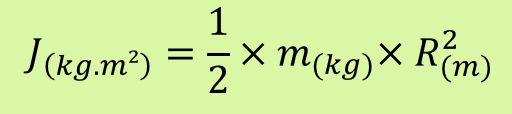

Le moment d'inertie quantifie la résistance d’un corps à sa mise en rotation, plus la quantité de matière est éloignée de l’axe de rotation, plus la résistance au mouvement sera importante. Dans le cas d'un solide cylindrique homogène de rayon R dont le centre de gravité est situé sur l'axe de rotation et de masse m, le moment d'inertie est tel que :

Nous devons donc connaitre le rayon du cylindre correspond au rotor ainsi que sa masse. Dans le principe il ne faut jamais démonter un MCC car il serait endommagé irrémédiablement. Dans le cadre de vos investigations, un moteur démonté vous est fourni pour effectuer vos mesures.
Vous pouvez aisément déterminer la dimension R avec un pied à coulisse et la masse m avec une balance.
La dimension R et la masse m permettent de calculer le moment d'inertie J.
Retour en haut de la page